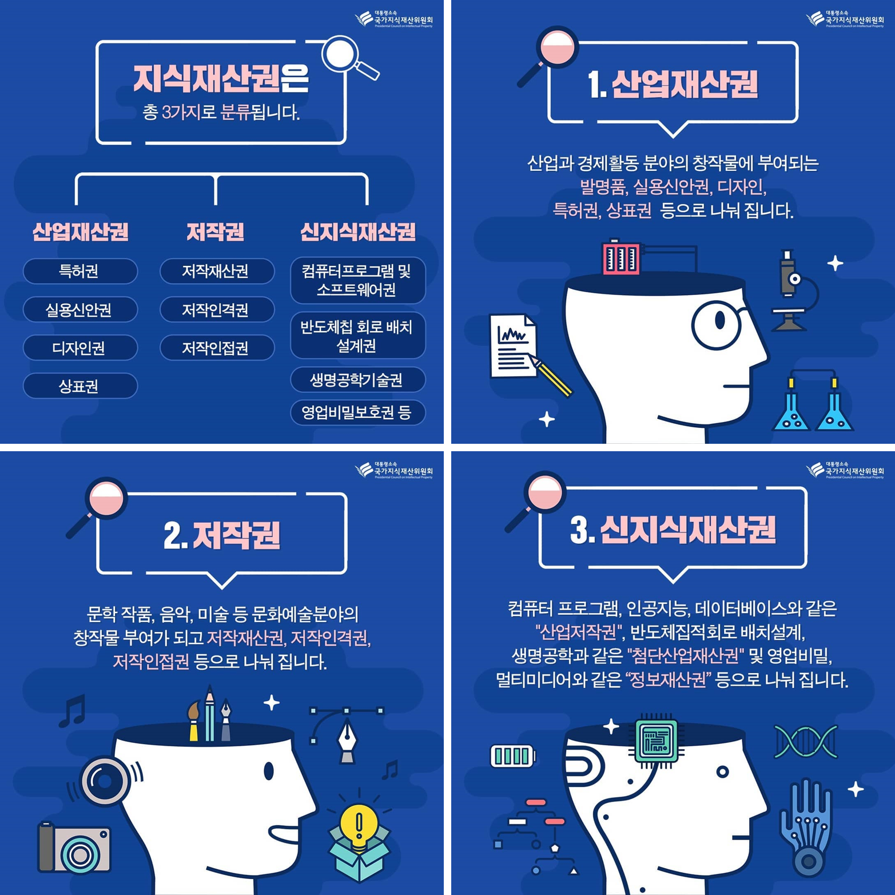

생생보안정보통
생생보안정보통지식재산권
지식재산이란?
인간의 창조적 활동 또는 경험 등에 의하여 창출되거나 발견된 지식 정보 기술, 사상이나 감정의 표현, 영업이나 물건의 표시, 생물의 품종이나 유전자원, 그 밖에 무형적인 것으로서 재산적 가치가 실현될 수 있는 것을 말한다. (지식재산기본법 제3조 제1호)
지식재산의 유형

산업재산권 분류
| 특허 | 실용신안 |
|---|---|
|
|
| 디자인 | 상표권 |
|
|
저작권법이란?
지식재산권법 가운데 주로 문학, 학술 또는 예술의 범위에 속하는 창작물에 대해 그 창작자에게 일정 기간 독점적인 지위를 부여하는 것을 말한다.
저작재산권이란?
저작자의 재산적 이익을 보호해주는 권리로서 저작물을 제3자가 복제나 배포, 전송 등의 방법으로 이용하는 것을 허락하고 그 대가를 받을 수 있는 권리를 의미한다.
저작재산권 범위
- 복제권: 저작자는 그 저작물을 복제할 권리를 가진다.
- 공연권: 저작자는 그 저작물을 공연할 권리를 가진다.
- 공중송신권: 저작물을 공중이 수신하거나 이에 접근하게 할 목적으로 유무선 통신의 방법으로 송신하거나 이용에 제공한다.
- 전시권: 저작자는 미술저작물 등의 원작품이나 그 복제물을 전시할 배타적 권리를 갖는다.
- 배포권: 저작자는 저작물의 원작품이나 그 복제물을 배포할 권리를 가지며 공중에게 대가 수수 여부와 상관없이 양도나 대여하는 것을 말한다.
- 대여권: 저작물이 정상적인 거래 방법으로 제공되었다면 이를 구입한 사람은 아무런 제한없이 그 복제물 등을 다른 사람에게 판매, 대여, 처분할 수 있다.
- 2차적 저작물 작성권: 원저작물을번역, 편곡, 변형, 각색, 영상제작 등의 방법으로 작성한 2차저작 물을 저작권자는 이용허락 할 수 있는 권리를 갖는다.
<- 다 읽었으면